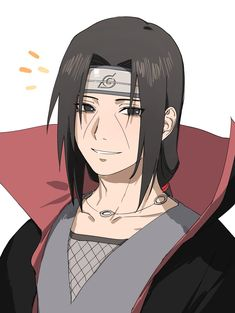

The Itachi Uchiha

Naruto tries leaving Sasuke's Susanoo, but Sasuke stops him, telling Naruto he will also be caught in the Infinite Tsukuyomi. Minato sees Konoha under the Infinite Tsukuyomi, the other great shinobi villages also under it. Tobirama unsuccessfully tries
to free some shinobi from the roots of the God Tree. Black Zetsu notices Sasuke's Susanoo. Sakura asks Sasuke about what is happening outside, but he shuts her down. Kakashi tries speaking up, but is shut down as well. Naruto berates Sasuke. Sasuke
explains they are likely the only ones not caught by the Infinite Tsukuyomi. Several shinobi's dreams are shown. Sasuke explains that as long as the light of the Infinite Tsukuyomi shines, it is pointless trying to do anything. He recalls his
memories of Itachi that imparts with him when the Impure World Reincarnation was cancelled.